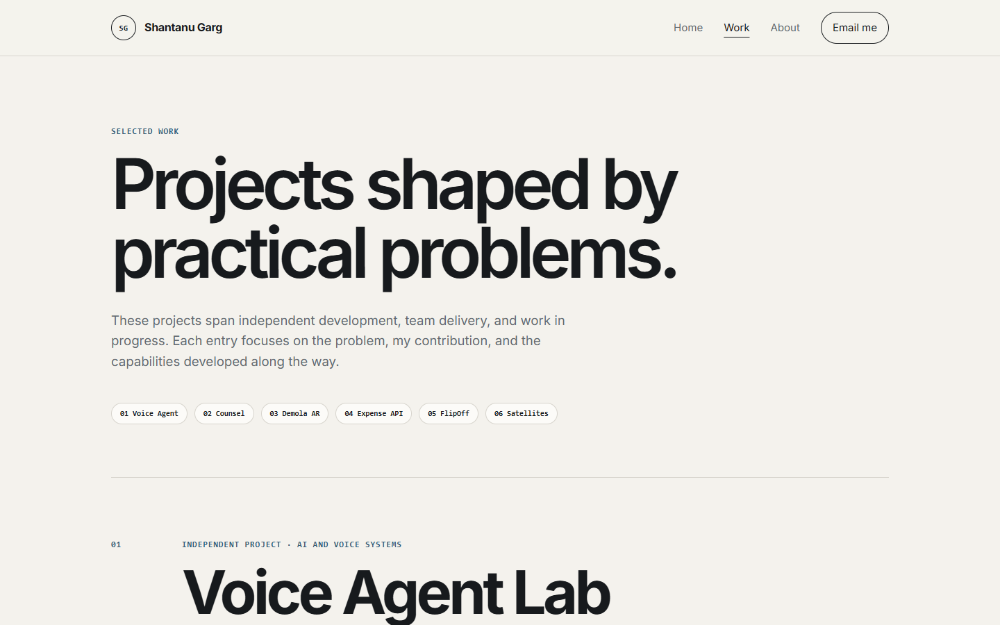
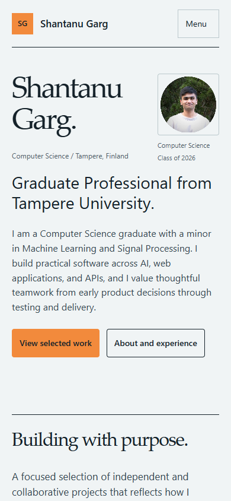
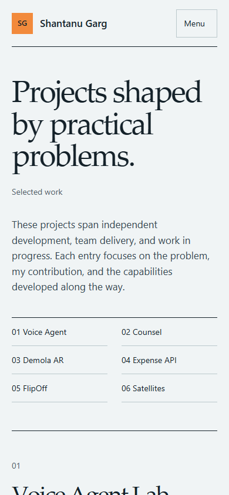

A new design, the same portfolio.
Studio showcase on a separate branch. The production pages remain unchanged. Open a screenshot to inspect it at full size.
Home at 1440px


Work at 1440px



Home and Work at 390px




Studio showcase on a separate branch. The production pages remain unchanged. Open a screenshot to inspect it at full size.


